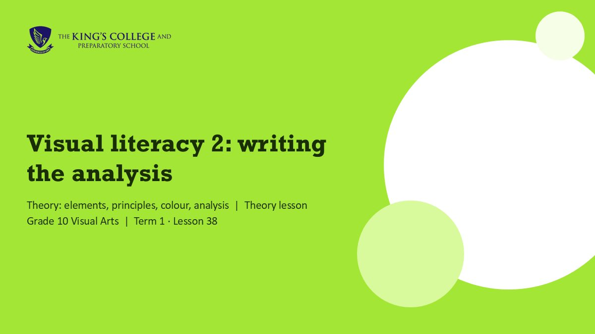

Term 1 · Lesson 38 · Theory lesson
Visual Literacy 2: Writing the Analysis
Start Here
Today I Will
- Write paragraphs with a point, evidence and explanation
- Use art vocabulary precisely
- Give and use peer feedback to improve my writing
Think first
Which sentence earns more marks: 'The painting has lots of nice colours' or 'Warm yellows fill the background and make the street feel full of life'? Why?
Words to Know
| Word | Meaning |
|---|---|
| Paragraph | A group of sentences about one main point. |
| Point | The topic sentence: a clear statement that answers part of the question. |
| Evidence | Specific details from the artwork: what, where and how, in art vocabulary. |
| Explanation | Why the evidence matters: its effect or meaning. |
| Vocabulary | The precise art words you use, such as tenebrism, contrapposto or complementary colours. |
Slides

Videos
Notes
Paragraphs with point, evidence and explanation; using art vocabulary precisely; avoiding vague words.
Building a Strong Art Paragraph
- Point: Start with a clear topic sentence that answers part of the question.
- Evidence: Give specific visual details: what, where and how, using the correct art terms.
- Explanation: Say why it matters: the effect on the viewer or the meaning it creates.
- Link: Tie it back to the question, the Focus Theme or the next part of your essay.
Words That Work and Words That Don't
| Vague | Precise |
|---|---|
| 'It is a dark painting with some light' | 'Caravaggio uses tenebrism: deep shadow with one strong beam of light' |
| 'The colours are nice' | 'Complementary orange and blue create strong contrast' |
| 'The statue is standing normally' | 'The figure stands in contrapposto, with the weight on one leg' |
| 'I feel like it is sad' | 'The downward lines and muted palette create a sombre mood' |
Remember
Point it, prove it, explain it: and say it with the right art word.
Practical
You need: Theory booklet, laptop, project artwork
Write and Peer-Review One Paragraph per Part
- Open your visual literacy project document.
- Write one paragraph for each part (Describe, Analyse, Interpret, Opinion) about your project artwork.
- Check each paragraph for a point, evidence and explanation, and delete any banned vague words.
- Swap with a partner. Highlight their point, evidence and explanation in three different colours.
- Give one 'star' (what works) and one 'step' (what to improve) for each paragraph.
- Revise your paragraphs using your partner's feedback.
Test Yourself
- What do the letters in PEEL stand for?
- Rewrite 'The sculpture is cool' using precise art vocabulary.
- Which tense do you use to describe what happens in an artwork?
Show answers
1. Point, Evidence, Explanation, Link. 2. For example: 'The Nike of Samothrace twists forward while her wind-blown drapery creates a sense of movement and drama.' 3. The present tense (for example, 'the figure leans').
Finished Early?
Vague to precise
Sharpen your art vocabulary.
- Choose any artwork from your booklet.
- Write three vague sentences about it, such as 'the colours are nice'.
- Rewrite each one precisely, using a correct art term and saying where and what effect.
- Underline the art term in each new sentence.